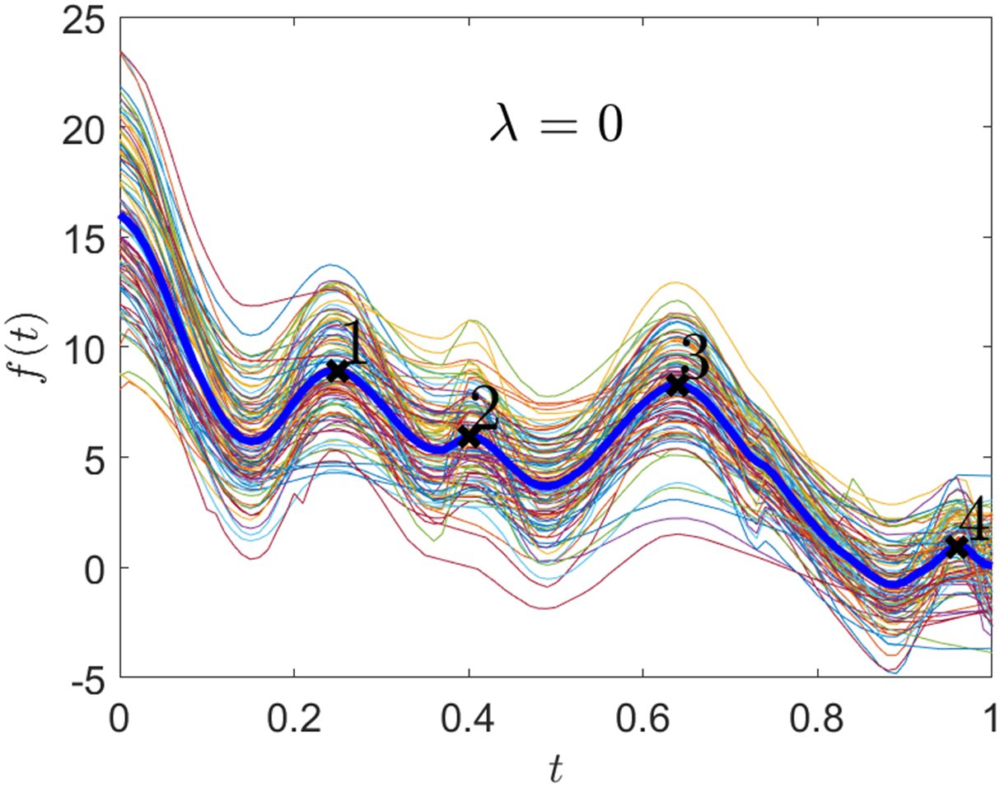
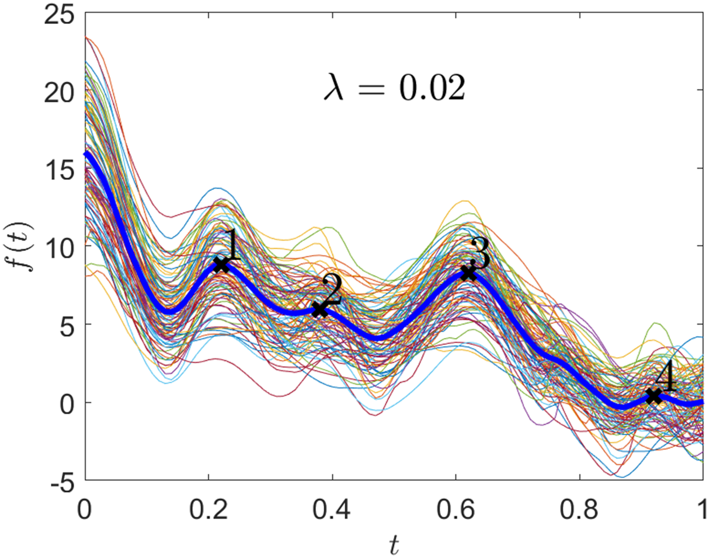
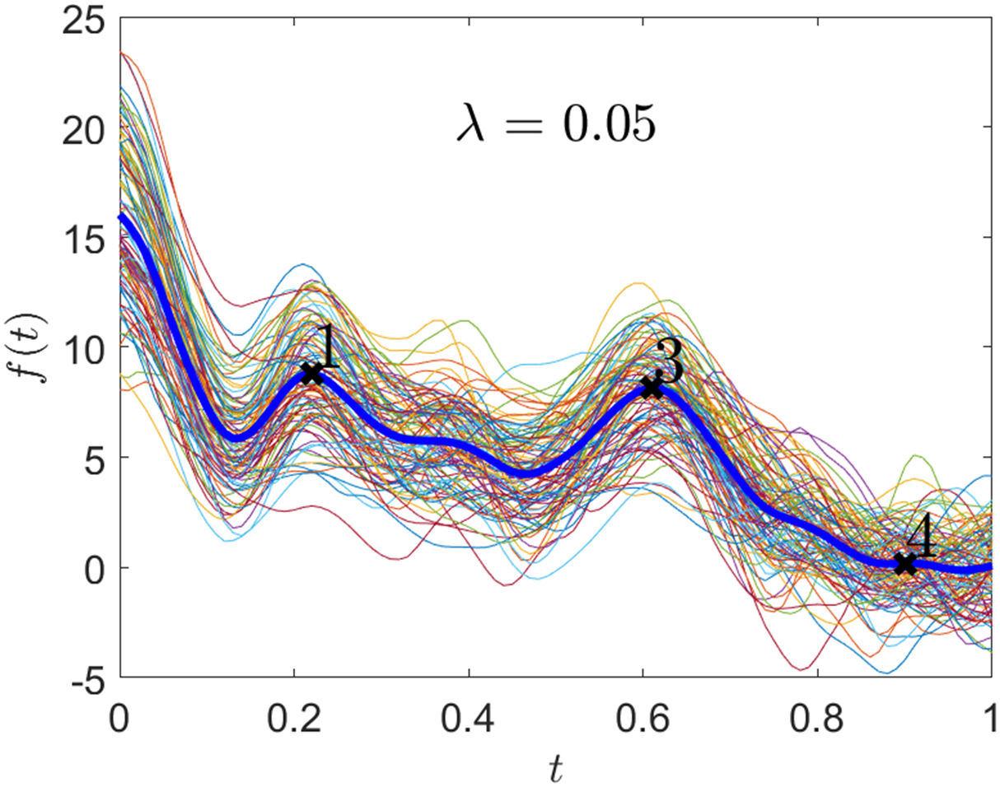
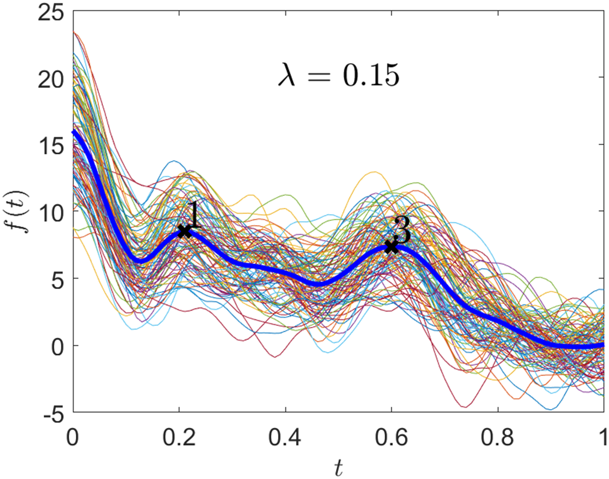
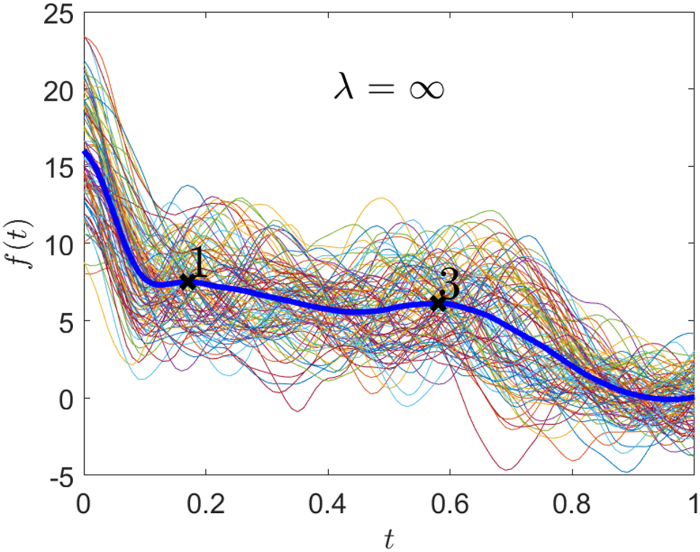

$\qquad \qquad \qquad \hat{g}_{\lambda_1}$ $\quad \quad(\lambda_1 = 0)$
$\qquad \qquad \qquad \hat{g}_{\lambda_2}$ $\quad \quad(\lambda_2 = 0.02)$
$\qquad \qquad \qquad \hat{g}_{\lambda_3}$ $\quad \quad(\lambda_3 = 0.05)$
$\qquad \qquad \qquad \hat{g}_{\lambda_4}$ $\quad \quad(\lambda_4 = 0.15)$
$\qquad \qquad \qquad \hat{g}_{\lambda_5}$ $\quad \quad(\lambda_5 = 0.30)$
